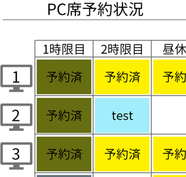

生データを編集する
予約をした際に、データは全て生データシートに格納されます。

A列の予約日はyyyymmdd形式で予約した日付、B列の予約時間帯は予約したコマが入力されます。（1→1限目、2→2限目、3→昼休み、4→3限目、5→4限目というように対応しています）
C列の席番号は予約したPC席の番号、D列の予約コードは日付と予約時間帯、席番号を合わせた、データ処理用のコード番号を、E列はケーブルを貸し出しているかどうか、1は貸し出し中、0は貸し出していない場合を表示します。F列からは入力された台帳番号を省略した独自の番号を表示しています。（フォームから学籍番号を入力すると自動的に変換されます）
直接ここに入力することで予約を編集することも可能です。
また学籍番号を入力するセルに文字列を入力するとその入力した文字列が表示されます。機材の不調や貸切など、特殊なステータスが必要な場合に利用することが出来ます。（表からの予約も不可になります）逆に言うとここにMとかDを含む学籍番号を入れるとそれがそのまま表示されてしまうので入力する場合は台帳番号を入力するか、他の数字に置き換えて入力してください。メインシートの右のほうには変換表もあるので参照してください


直接入力した場合はシートソートボタンをクリックするか、予約コードをキーとして昇順で並び替えを行ってください。（match関数の近似値一致で検索するため。軽量化のために行ったため、今後変更の予定は現状ありません）